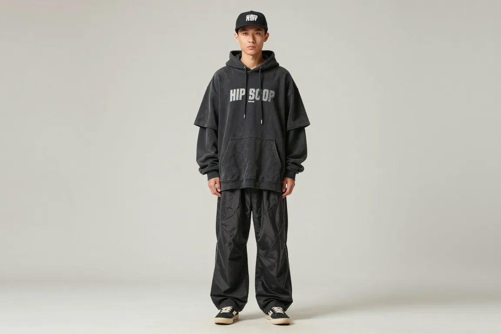

Повседневная одежда, выросшая из сёрфинга, скейтборда, хип-хопа и спортивных клубов с 1980 года. Футболка с графикой, худи, мешковатые джинсы, нейлоновые брюки и кепка, продаваемые малыми дропами.

Главная идея
Одежда идёт с улицы и из клуба: человек входит в группу простой удобной вещью, несущей знак.
Принципы дизайна
Кройте футболку и худи прямоугольными, шире тела на 5–10 см.
Печатайте знак, имя или графику на груди в одном-четырёх плоских цветах шелкографией.
Выбирайте плотный хлопковый джерси 200–300 г/м² и футер с начёсом изнутри для худи.
Кройте джинсы или брюки широкими и прямыми и позволяйте подолу ломаться на обуви.
Добавляйте один спортивный или рабочий элемент: нейлоновую вставку, карман на молнии или кулиску.
Выпускайте вещь малым тиражом, чтобы она была у немногих.